Previous: A Practical Guide to Peak Performance - Part 1 | 🏠 Mental Game Home | Next: Be Wary of Hidden Fear
A Practical Guide to Peak Performance
Comprehensive unified tennis knowledge base — Fundamentals, Stroke Analysis, Reference Library, and more
A Practical Guide to Peak Performance
Part 2
Jeff McCullough
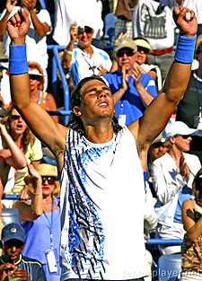
What are the final 4 components to achieve peak performance?
In this first article in the series, I presented the first four elements in my practical guide to peak performance. Those 4 components were: Fun, Playing for Yourself, Going for Your Shots, and Looking Confident. (Click Here.)
Now in this article, let's complete the system by discussing the other 4 components: Stress Management, The Cognitive Component, Attentional Techniques, and The Will To Win.
Taken together, these 8 factors create a practical and easily applicable performance enhancement system. They are designed to take the uncertainty out of how to handle pressure and give players the best possible chance to play their best and win more.
In my experience, players often try to overcome mental and emotional challenges by just trying harder. Or they go the other way and become obsessed with mastering every detail in the encyclopedic work of mental game researchers. I call my system a practical guide because it synthesizes the available cutting edge information into manageable steps to follow on the court.
I strongly believe that tennis players can greatly benefit from this stripped down approach. I believe this because I have forged the system working both as a player and a coach and seeing so many students blossom under its impact.
Junior players and players at all levels blossom in the system.
The Final Piece
At the end of this article, I'll present a critical final piece that will pull the whole system together for you. It's a quiz, a series of simple questions that you should ask yourself after every match you play. By evaluating yourself on a scale of 1 to 5 on each question you will get a clear baseline of where you start with the system, and also be able to accurately track your progress.
This quiz is the key to taking what you learn from the theoretical to the practical - something most players never do, despite the perpetual quest to develop their mental game. I can't stress enough how important this last phase is if you really want to achieve peak performance. But find out for yourself by using it.
Final Four
So once again, the four additional components we will look at in this article are:
Final 4 Components:
1) Stress Management
2) The Cognitive Component
3) Attentional Techniques
4) The Will To Win
Stress Management
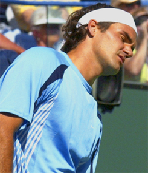
Stress in competitive tennis can be extremely intense.
Stress in tennis is real, and anyone who hasn't played competitively can't really understand how intense it can be. When the competitive tennis player is under the gun the best thing he can do to bring his physical, mental and emotional systems back into balance is to breath, both during and between points. We saw in the first article that breathing is critical in maintaining a confident physical appearance. (Click Here.) But it is equally critical in managing stress. Here again I am talking about purposeful, deep breathing, breathing used as a conscious technique.
One of the most common problems players face when their stress levels rise is that their breathing becomes restricted. This is true not only between points, but especially during the points themselves. Most players are completely unaware how and when this happens. So it is critical to start to pay attention to how you breathe and to monitor how this may change when the pressure goes up.
As Jim Loehr has shown (Click Here) breathing during play should be coordinated with the stroke, so that exhalation occurs during the forward swing. So it is not only a question of practicing the breathing techniques we looked at between points in the first article, it is a question of breathing during point play, and purposefully breathing through the hit.
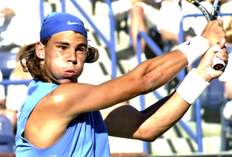
Exhalation should coordinate with the forward swing.
Practiced over time, these techniques will facilitate oxygenation of the blood and the brain. Suddenly the feet are moving better, your heartbeat is more controlled, and you can focus again on your game plan and going for your shots. Remember that choking, literally, is the inability to breathe. Overcoming choking requires that you reestablish that ability.
The great thing about these techniques is that your breathing is something you really can establish control over. It's all about you, not what your opponent is doing. Whatever happens in a match, it's a process you can control and feel good about regardless of outcome.
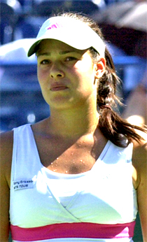
Do you have an automatic fall back under pressure?
Cognitive Component
The second component is the cognitive component. Your mind and imagination are extremely important tools in your entire high performance tool chest. "For as you think so shall you be". That's a concept that you find not only in sports, but in philosophy, religion, and psychology.
As the tennis player descends down into the cauldron of match pressure he or she needs what I call an automatic fall back affirmative thought. This thought can be summoned up to generate positive intensity and confidence. When you feel yourself becoming tense and negative, affirmative thinking functions like a mental reset button. It can restore your full commitment to play according to your own goals on the next point--and on every subsequent point.
Perhaps you already have one or two affirmative thoughts that you can automatically plug into your mind, like a familiar mantra. If they work well for you stick with them.
But, there are two that I strongly suggest that you try. The first is a little more general: "I will play my best tennis now." The second is a little more specific: "C' mon let's get this next point."
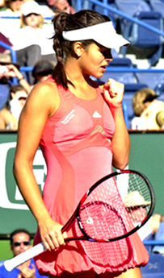
Affirmations can keep you positive and confident.
Both of these affirmations allow you to let go of bedeviling immediate past mistakes. They also keep you from drifting off into the uncertainty of the future. Their power is to keep you focused on the present moment, the only way peak performance can really emerge.
As Timothy Gallwey was among the first to point out, great tennis is played only when you are fully present. In his classic work, The Inner Game of Tennis, he states that if you are fully committed to each forthcoming point, you give your yourself the best chance of being present, and also, of achieving your goal of winning as a by product of this focusing process. You let go of the disappointment of any previously botched points. And you avoid allowing your attention to shift forward to future points which may reveal the outcome of the match.
When you are present in the moment you are not lost in either the past or the future. You will find it easier to enjoy the competition and play with commitment and confidence.
Attentional Techniques
The flight of the ball can produce mesmerizing focus.
Up to this point we have considered pre-match preparation and between point behavior. But is there anything that the player can do during the point itself that will also allow him to play his very best tennis? This where we get to the third factor, what I call, Attentional Techniques.
In the literature there are two outstanding focusing methods for accomplishing this. The first is again from Gallwey, the inner game practice of focusing deeply on the flight of the ball.
If you are truly consumed with watching the ball with all the permutations in spin, speed, arc and bounce, you are de facto playing in a present minded state. Some players report that this technique leads to an almost mystical focus. When negative thoughts intervene, coming back again and again to the ball is something all great players do instinctively.
But have you yourself ever really tried to follow the spin by watching the revolution of the seams? How does the spin change from your shot to your opponents? What happens to the spin at the bounce? These are incredibly powerful details for staying in the flow of the match.
Visualize a key image and let your swing follow it.
Of course the common criticism of Gallwey is that this technique says nothing about how to execute the strokes or shot placements under pressure. Those, somehow, just "happen" virtually unconsciously in his system. And for high level players, that may in fact actually be true. But what about for the rest of us?
A complementary attentional technique to Gallwey's was developed years ago by our own John Yandell, in his book Visual Tennis. While Yandell basically endorses the idea of continuous ball focus, he believes that players can supplement this by using internal mental imagery of key aspects of strokes and/or shots. He believes it is possibly to watch the ball intently and still visualize positive imagery of what you wish your body to do. This imagery can be of technical positions, such as contact or finish, or of shot trajectories and placements.
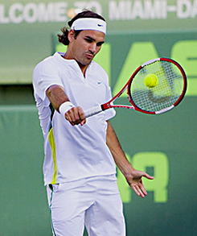
Do top players naturally imagine shot making perfection?
Through his interviews with top players, Yandell came to the conclusion that the best players were guided by this type of subconscious imagery, and that the average player could develop the same ability, systematically.
He found that players who used their internal imagery in this way could "learn to look forward to the pressure situations." Positive imagery gave them a way of blocking negative thoughts and replacing them with feelings of confidence in their ability to hit short forehand winners, tough volleys, clutch second serves, etc. Essentially he found, imagery is the bridge in the mind/body connection.
To use imagery in this fashion, the player simply works within his own technical framework to create pictures (rather than verbal descriptions) of how he wishes to execute a stroke or shot, and pre-visualizes these "keys" on the court until the process becomes automatic and natural.
Will to Win
The will to win is the final factor. It's the big daddy of the emotional and mental game. Without the will to win the other components will never produce the success you may be truly capable of achieving.
Some analysts believe that the will to win is an innate trait. Others think it can be learned. This is another version of the nature versus nuture debate that runs through psychology in general, and I think both positions have validity. However, I am convinced that certain people are naturally endowed with more than their fair share of this precious commodity.
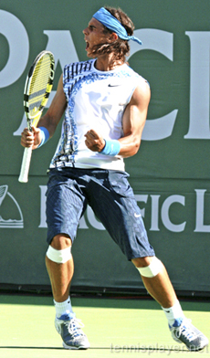
Nadal's will can make the outcome seem foregone.
The most prominent example of a player who exudes naked desire is Rafael Nadal. Everything he does from the moment he steps into the locker room (and probably earlier) emphatically shouts the message: "I want to win this match more than you do." That is perhaps the element that--when he is sufficiently rested and healthy - makes him nearly untouchable.
This is a guy who tries to bite off part of the trophy after he win a Grand Slam. When you look at his face in the heat of his great confrontations with Roger Federer, you often get a sense that the outcome is already determined.
Obviously, few if any players possess the super human determination of a Rafael Nadal. So how much desire do you, at your own level, actually need? The answer is simple. At a minimum, you have to want it a little more than the guy on the other side of the net on a given day. Sometimes that doesn't require maximum desire.
But for most players, reaching their potential will require increasing their desire to win, and sometimes, increasingly it dramatically. You see how this works when there is a state of essential parity between players. Or when an underdog finds himself in a match with a legitimate chance to take the scalp of a heavy favorite. In both cases the will to win, and who has more of it, is usually the determining factor. (Click Here to find out more about the Underdog.)
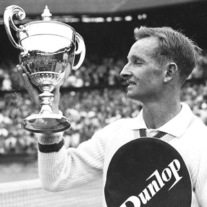
Rod Laver, perfect gentleman, or an all time great with a mean streak?
In the history of the game there are a few players whose hallmark traits included an unbelievable will to win: Jimmy Connors, Bjorn Borg, John McEnroe, Billy Jean King, and Chris Evert are all in this category.
But one player who also possessed this same ferocious desire might surprise you. That was Rod Laver, the only two time Grand Slam winner in tennis history. Off the court Laver came across as a humble, easy going Australian and one of the nicest guys in the history of the game.
On court he always behaved as a perfect sportsman. But below the surface lurked the fiery soul of a savage tennis predator. I can say this without doubt because of an amazing, serendipitous encounter I had several years ago with the man called Rocket, an encounter on an airport tarmac in Chicago at 4:45am. (And more on how all that occurred at a later time.)
Tapping into my own will to succeed, I stalked the Rocket peppering him with questions until he finally agreed to talk, probably the best alternative he saw for escaping my clutches in an empty public throughfare in the middle of the night. And what he said was vastly illuminating, and at the same time surprising, given the public persona of the man.
A ruthless desire to eviscerate--and an intense hatred of losing.
Laver explained to me that when he stepped on the court, he was literally transformed, in a manner resembling Dr. Jekyl into Mr. Hyde. He called what came out in him during match his "mean streak." His goal was nothing less than the complete, ruthless evisceration of his opponent. What he believed truly separated him from his contemporaries was the intensity of his desire to win combined with his ferocious "hatred of losing." So very often it comes down to who wants it the most.
However, have I just contradicted what I said at the start of the article, that simply trying harder and willing victory was the wrong approach? The answer is no, because will alone is not enough. It may be a driving engine, but it needs fuel from all the other components in the system. Players who rely on desire alone often short circuit themselves by intensifying what are actually counterproductive efforts. For example, by simply trying to hit the ball harder and harder, no matter what their level of skill or the tactical situation in a match.
Overdrive
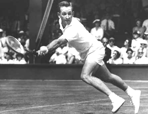
Laver: the ability to reach overdrive - and win when he couldn't
Once all 8 elements have all been combined it will at times be possible to perform in what I call the state of tennis overdrive. A player in overdrive is fearless, artistic, and supremely determined. This is competitive nirvana.
However, overdrive is normally an ephemeral phenomenon, something to be enjoyed but never counted on. Despite his great record, Laver's career is also testimony to the elusiveness of continuous peak performance. That night in Chicago, he also told me that he was able to play in overdrive about 35 or 40 percent of the time. The rest of the time he had to figure out various ways to grind out victories.
So there you have it from arguably the most successful competitive player in the history of the game. And of course that is what the other components in my system are all about - applying proven techniques to maximize your performance in the circumstances in which you find yourself on the a given day in a given match.
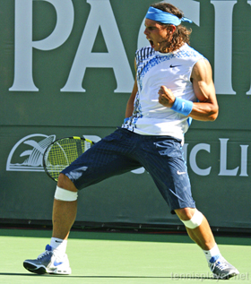
How well did you maximize your mental performance on a given day?
The Quiz
So now the quiz. The quiz is the final, absolutely essential tool you must use to take this system from theoretical to practical. It allows you to see your effectiveness with all 8 components and how you are progressing toward their mastery.
It works like this. After every match, ask yourself these 8 questions and record your answers. Use a simple numerical grading system of 1 through 5, with 1 being the lowest score and 5 being the highest. Brutal honesty is essential here. Your development is at stake. You and you alone are the one who can make these determinations in an accurate and comprehensive manner.
In particular, make note of the areas in which you are on the lower end of the continuum. The items that are in the 2-3 range offer extremely valuable information as to where you need to focus your efforts. Ask what you need to do to bring them up to a level of 4 or 5. And if you initially have high numbers and many 4s, ask yourself how you can bring them up to a 5. Why settle for less?
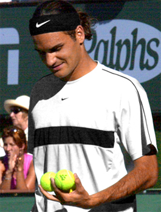
Did you enjoy the battle regardless of the victory?
Question 1: Did I play with the right purpose? Did I "enjoy the battle" whether I won or lost? Was I able to learn things which will foster further improvement? Score yourself 1 to 5.
Question 2: Was I able to make a full commitment to my goals during the match? How focused was I on the process not the outcome? Was I really playing for myself? Score yourself 1 to 5.
Question 3: How freely was I able hit out and go for my shots? Was I able to play high percentage aggressive tennis during even the most pressure filled points? Or did my play become much too conservative and tentative? Score yourself 1 to 5.
Question 4: When my arousal levels were rising beyond optimal levels was I able to use remain engaged in the battle through the use of my breathing stress management techniques? Score yourself 1 to 5.
Question 5: When things got tough was I able to use my key affirmative thoughts for energy and motivation and to reset myself for the next point? Do I feel that there may be another affirmative thought or thoughts which might be more effective for me? If so what? Score yourself 1 to 5.
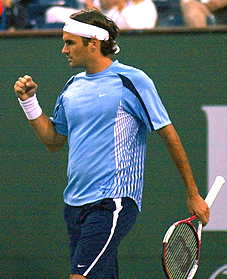
How much confidence did you project?
Question 6: How well was I able to project an image of confidence before the start of the match Was I able to continue to do this, whether I was playing my best and/or was winning, or whether I was not playing my best and/or was losing? Score yourself 1 to 5.
Question 7: Was I able to use one or more attentional techniques on a point by point basis in order to maintain functional bio-mechanics and reduce choking? Did I succeed in staying in the present most of the time during point play? Score yourself 1 to 5.
Question 8: How much did I really want it? Did my level of commitment result in a truly undiluted effort? What was the level of my will to win? Did I validate my purpose through the effort I dedicated to the battle? Score yourself 1 to 5.
Now total it up. The maximum score is 40. And you can be certain that the best players are right there or very close to it most of the time. The first time you take the test, that score will become your baseline, to see where you are, and where you are going.
Following the steps makes improvement inevitable.
Taking this quiz regualrly is the critical component to keep focused on using the system, and for guaranteeing that you will progress. Every time you play a match and grade yourself, note whether your score is increasing. Generally a score above 30 is quite good because you are then averaging close to 4 on all components. If your score is consistently below 20 you may want to consider working with a mental game expert on the problem areas that are not improving with more matches.
But I believe that if you rigorously apply the system in your match play that improvement is virtually inevitable. You will enjoy your experience more even as the pressure mounts, and more than likely have that big breakthrough win you've been dreaming about.
Jeffrey F. McCullough has been a leading California teaching pro for over 30 years. In the early 80's, he worked at San Francisco's legendary Golden Gate Park where he taught side by side with John Yandell--and for a year shared an ocean view apartment in the city's Sunset district. For the last 13 years he has taught in San Diego, California at the George E. Barnes Family Jr. Tennis Center. Specializing in developing junior players, he has coached over 50 juniors who have gone on to win tournaments at all levels in USTA play. Jeff is also the author of the seminal work on the two-handed game, "Two Handed Tennis: How to Play a Winner's Game."

"In Two-Handed Tennis: How to Play a Winner's Game," Jeffrey F. McCullough outlined for the first time the entire history of the two-handed style, the essential biomechanical differences between one and two-handed shots--including the various advantages of the latter, and described in detail the biomechanics of all the major two-handed shots in the 3 areas of the tennis court, including how to develop a two-handed forehand in several variations. This classic work was first published in 1984. Click Here to order!
Source: tennisplayer.net archive — A Practical Guide to Peak Performance - Part 2.docx (John Yandell teaching library, 2002-2022). Extracted and rendered as HTML for Tennis Future Lab.